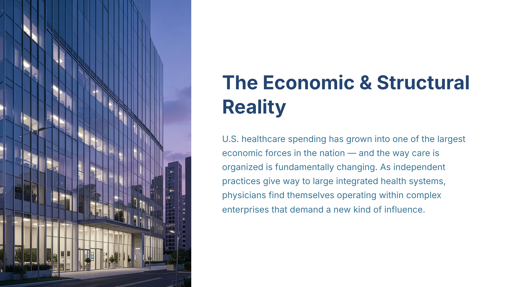

#1
The Economic & Structural Reality
slide-01
creativevariant Acluster headCoherence pendingcard 1orientation landscape
Approved slide

[+]Asset status: present | Dimensions: 2400×1350
Motion review: Motion: static | n/a
Cluster c-u01Position establishInterstitial type n/aIsolation target n/aDevelop type n/aArc From clinic-level assumptions to enterprise-level awareness through economic and structural evidence.
Script
Status: Attached
92 words@150 WPM 36.8shead narrationtiming orientdensity mediumposition establishintent credibleintent serves master
The main message is simple and consequential: healthcare isn’t just another sector anymore; it’s one of the dominant forces in the U.S. economy, and that scale is reshaping how care is organized. As independent practices give way to integrated health systems, your day-to-day authority shifts from individual discretion to enterprise decision-making. Visual context matters here—the institutional scale around us is the real operating environment. If you want your clinical judgment to travel, you have to learn how to influence the enterprise, not just optimize a single clinic.
Script notes
The Economic & Structural Reality — Explain the macroeconomic growth in U.S. healthcare spending and the structural shift from independent practice to employment within large health systems, and why this changes how physicians must influence care delivery.
Evidence & provenance
- Source ref
- n/a
- File path
- gary/A_slide-01.png
- Created
- 2026-06-26T18:52:12.396558+00:00
- Literal-visual source
- n/a
- Matched segments
- seg-01
- Narration refs
- n/a
- Visual refs
- 0
- Visual mode
- n/a
- Visual file
- n/a
- Motion type
- static
- Motion status
- n/a
- Motion source
- n/a
- Motion duration
- n/a
- Runtime target (s)
- n/a
- Motion asset
- n/a
- Timing role
- orient
- Content density
- medium
- Visual detail load
- medium
- Bridge type
- none
- Behavioral intent
- credible
- Duration rationale
- Head slide establishes the structural thesis without overloading detail.
- Cluster position
- establish
- Interstitial type
- n/a
- Isolation target
- n/a
- Quality
- Vera None | Quinn None
Findings
No findings attached.